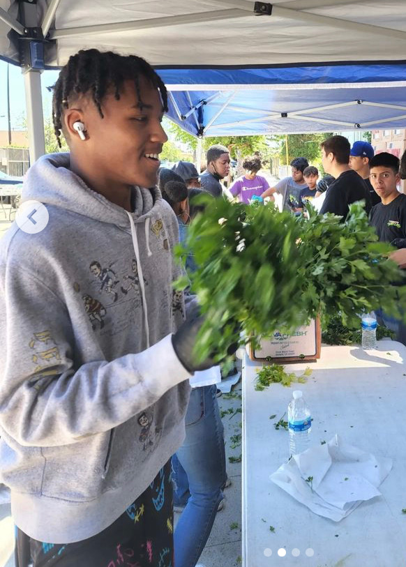
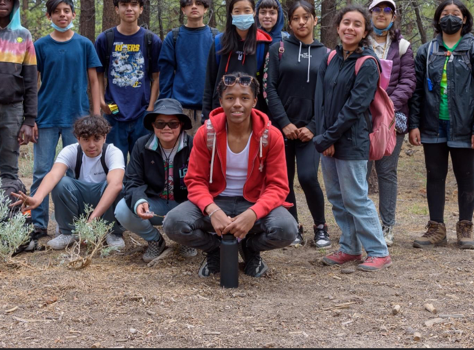

Basketball

Ever since i was about four years old ive been in love with basketball.
From watching my brother playing NBA 2K to my brother coaching my first basketball
team. I havent put the basketball down since. People like Lebron and Jimmy Butler
inspire me to keep going even when it gets difficult. Basketball has taught me to be
mentally sound. Its taught me to contril my emotions and never let anything get me out
of character
Giving Back
One thing about me is that I love to make someones life better. Personally
giving back to others and fulfills my happiness more than anything. My main motivation
to being sucessful is to be able to give back to my family and community so everyone could
be comfortable. My dream is to give as many people as possible a easier and less stressful life.
"EVERYONE CAN BE GREAT, BECAUSE EVERYONE CAN SERVE" -Martin Luther King Jr
Camping
Something about the outdoors is just so mentally soothing. I love being outdoors
and enjoying the nature. Being from Los Angeles and being surrounded by the city life really
could disconnect us from the earth where we are meant to be. Being in nature is like my natural
medicince and healing from what this society can do to you. The outdoors is beautiful and i want
to try and experince it as much as possible and travel the world.